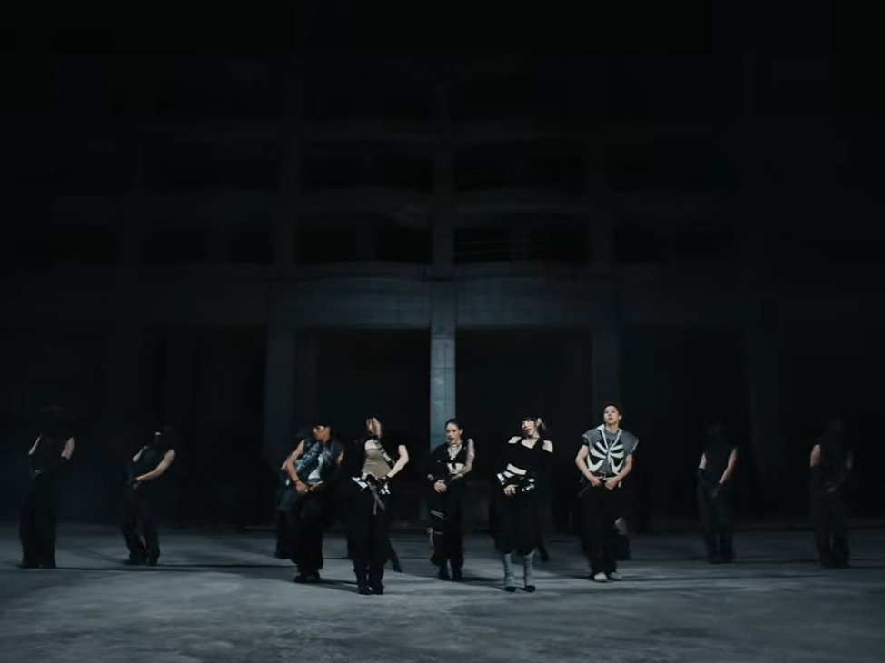
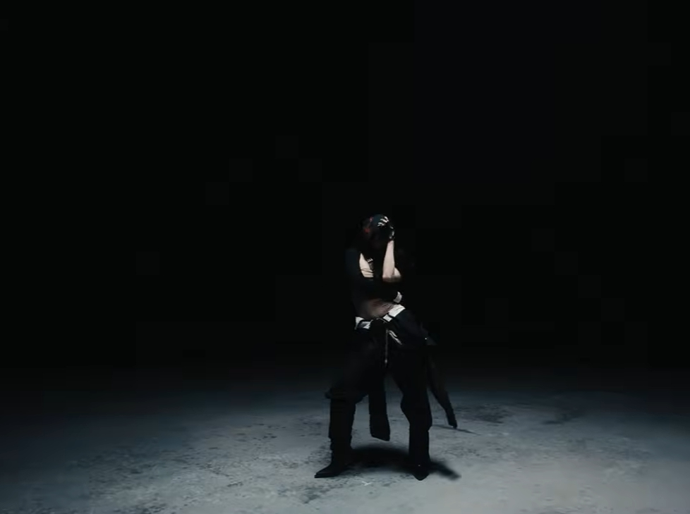
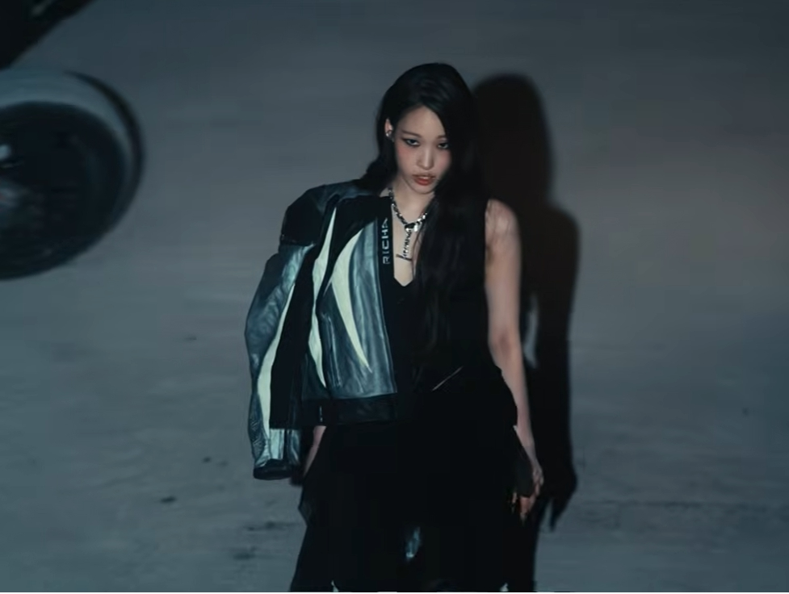
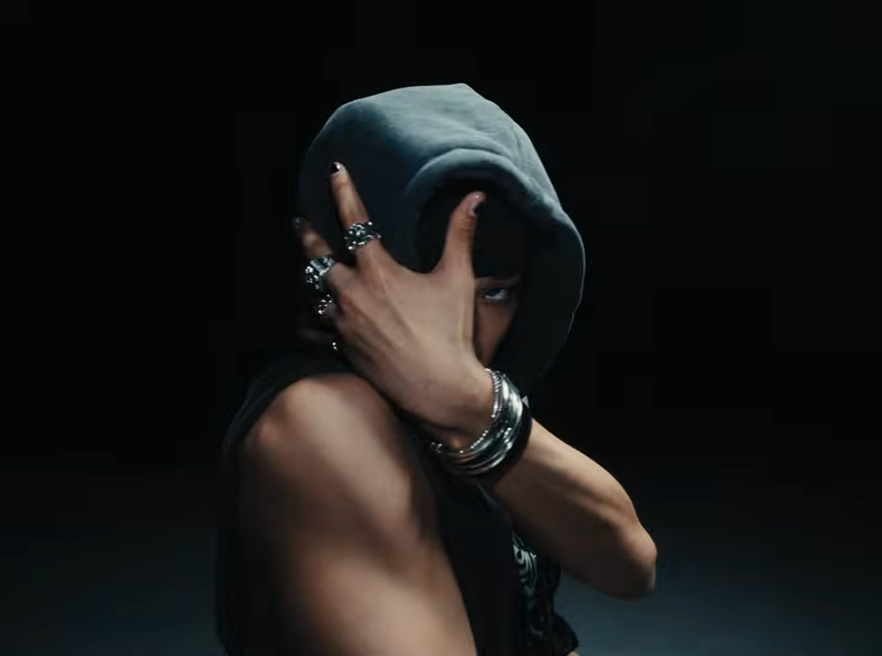
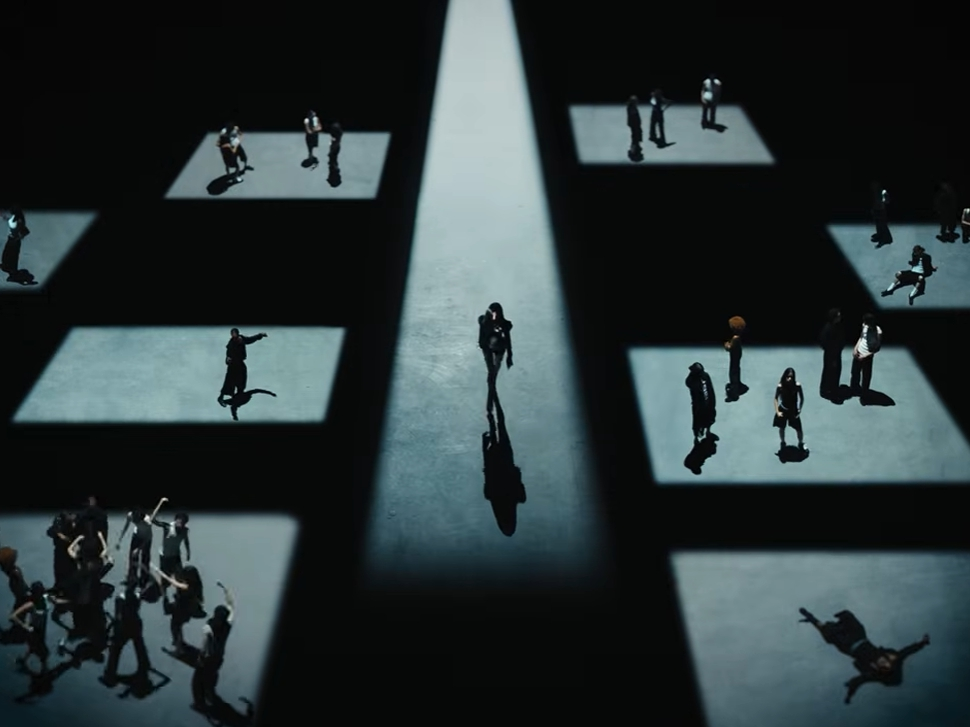
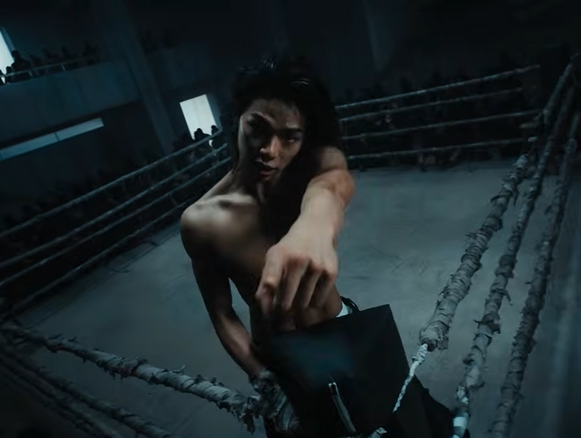

REFERENCE
ALLDAY PROJECT “TALK” M/V 리뷰

거칠고, 어둡고, 묵직하다.
이번 뮤직비디오는 다양한 컬러를 펼쳐놓기보다 전체적인 톤을 낮추고, 그 안에서 인물과 스타일링을 강하게 끌어올린다. 덕분에 뮤직비디오라기보다 한 편의 잘 만든 패션 필름을 보는 듯한 느낌도 든다.
DARK & RAW
전체적인 화면은 꽤 어둡다.
빛을 충분히 채워 넣기보다 강한 명암 대비를 활용해 인물의 실루엣과 표정을 더욱 선명하게 드러낸다. 밝고 깨끗한 K-POP 뮤직비디오에서 자주 볼 수 있는 비주얼보다 힙합 뮤직비디오의 거칠고 묵직한 질감을 선택한 점도 인상적이다. 대규모 세트와 어두운 분위기의 영상미가 어우러지면서 화면 전체에 자연스럽게 긴장감이 만들어진다.


뮤직비디오 컷
스타일링도 하나의 그래픽이다
"각자의 스타일은 살리고,전체적인 무드만 맞춘다."
영상에서 개인적으로 가장 흥미로웠던 부분은 세트의 규모가 큰데도 결국 시선은 멤버들에게 향한다는 점이다.
의상과 헤어, 액세서리는 각 멤버의 개성을 살리면서도 하나의 톤 안에서 자연스럽게 연결된다. 그래서 멤버들이 함께 등장하는 장면에서는 스타일링 자체가 하나의 그래픽 요소처럼 느껴진다. 큰 공간과 강한 스타일링이 서로 경쟁하기보다, 오히려 멤버들의 존재감을 더욱 선명하게 만들어준다.


뮤직비디오 컷
‘예쁜 화면’보다 스타일이 보이는 연출
〈TALK〉에서 인상적인 건 화면을 무조건 예쁘게 채우기보다, 스타일과 분위기가 더 잘 보이도록 설계했다는 점이다. 조명도, 표정도, 동작도 각자의 개성이 분명하고, 정돈된 아름다움보다는 조금 더 거칠고 과감한 화면을 선택하면서 올데이 프로젝트만의 무드를 전면에 드러낸다. 또한 화면을 소품으로 가득 채우기보다 넓은 공간과 어두운 배경을 그대로 남겨두고 그 안에 인물을 배치해, 여백 자체를 하나의 디자인 요소처럼 활용한다.
이런 연출은 곡의 메시지와도 잘 어울린다. 주변에서 무슨 말을 하든 자신들의 방식대로 나아간다는 태도처럼, 영상 역시 무언가를 길게 설명하기보다 표정과 스타일링, 공간과 움직임 자체로 팀의 스타일을 보여준다. 그 덕분에 의상의 디테일과 멤버들의 움직임은 더 크게 다가오고, 화면 전체에는 설명보다 분위기가 먼저 남는다.


뮤직비디오 컷
TOTAL REVIEW
이번 〈TALK〉 뮤직비디오에서 가장 마음에 들었던 건 팀의 이미지를 억지로 설명하지 않는다는 점이다.
거대한 공간과 어두운 톤, 과감한 스타일링, 그리고 멤버 각각의 개성을 하나로 묶어 “ALLDAY PROJECT는 이런 팀이다.” 라는 이미지를 자연스럽게 만들어낸다.
좋은 뮤직비디오는 노래를 그대로 영상으로 번역하는 데 그치지 않고, 그 음악을 떠올렸을 때 함께 기억되는 이미지를 만들어준다고 생각한다.
그런 의미에서 〈TALK〉는 꽤 인상적이다.
노래를 듣고 영상을 보고 나면
검고, 거칠고, 스타일리시한 하나의 이미지가 강하게 남는다.
어쩌면 그게 이번 뮤직비디오가 가장 잘한 ‘TALK’가 아닐까.